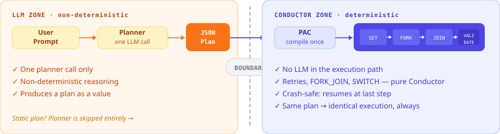

Plan-Execute¶
The LLM decides what to do. Conductor handles how — no tokens on orchestration, retries, or branching.
Most agent frameworks route every decision through the LLM — retry logic, branch selection, parallelism. Tokens for every control flow operation. Nondeterminism throughout.
Plan-Execute draws a hard line.

One planner call produces a JSON task graph. The Agentspan server compiles it into a deterministic Conductor sub-workflow. After that single LLM call, the execution is pure Conductor — crash-safe, replay-safe, and free of LLM randomness.
The core insight
Two identical plans produce two identical workflow definitions and two identical executions. Retries, parallelism (FORK_JOIN), branching (SWITCH), and validation are Conductor primitives — not LLM turns. The LLM is only invoked where it genuinely adds value: planning the shape of work, and generating per-step content.
The two phases in detail:
- Plan — the planner agent emits a JSON DAG of operations once.
- Execute — the server compiles that JSON into an immutable Conductor sub-workflow and runs it deterministically.
(The strategy is called PLAN_EXECUTE in the SDK. The server-side compiler is PAC, "PLAN_AND_COMPILE".)
Why this wins against a plain LLM loop¶
| LLM-loop agent | Plan-Execute | |
|---|---|---|
| Retries | LLM re-reasons | Conductor retry, no token cost |
| Parallelism | Ask LLM to fan out | FORK_JOIN — deterministic, exact |
| Branching | LLM decides each turn | SWITCH on JS expression |
| Crash recovery | Restart from scratch | Resume at last completed step |
| Replay two runs | Different each time | Identical — plan is a value |
| Validation | LLM self-checks | Deterministic validator + SWITCH gate |
| Testing | Non-deterministic | Pass a static plan — no LLM at all |
The deterministic boundary¶
The whole point of PAC/PAE is to draw a hard line between the non-deterministic part (the planner LLM reasoning about what to do) and the deterministic part (Conductor running the compiled DAG). Once the plan is compiled, the executor is replay-safe, branch-stable, and free of LLM randomness.
flowchart TB
subgraph ND["LLM (non-deterministic)"]
direction LR
Planner["planner agent<br/>emits JSON plan"]
end
subgraph PAC["PAC compile step (server, pure function)"]
direction LR
ExtractJSON["extract_json<br/>(static_plan → markdown_plan → planSource)"]
Compile["compile to<br/>WorkflowDef"]
ExtractJSON --> Compile
end
subgraph DET["Conductor sub-workflow (deterministic)"]
direction LR
Setup["SET_VARIABLE<br/>_ctx_init"]
Fork["FORK_JOIN<br/>(parallel steps)"]
Join["JOIN<br/>(aggregate)"]
Validate["validation +<br/>SWITCH gate"]
Setup --> Fork --> Join --> Validate
end
Prompt[["user prompt"]] --> Planner
Planner -- "JSON plan in ```json fence```" --> ExtractJSON
Compile -- "workflowDef (Conductor JSON)" --> Setup
StaticPlan[["static_plan=<br/>(skip planner)"]] -.->|"Case 0:<br/>overrides LLM"| ExtractJSON
Validate -- pass --> Done(["COMPLETED"])
Validate -- fail --> Fallback{{"fallback agent?"}}
Fallback -- yes --> FallbackRun["LLM-loop recovery"]
Fallback -- no --> Failed(["FAILED"])
classDef llm fill:#fff3e0,stroke:#e65100,stroke-width:2px;
classDef pure fill:#e8f5e9,stroke:#1b5e20,stroke-width:2px;
classDef det fill:#e3f2fd,stroke:#0d47a1,stroke-width:2px;
class Planner,FallbackRun llm;
class ExtractJSON,Compile pure;
class Setup,Fork,Join,Validate det;Why this shape gives you determinism:
- One planner call, then we're done with the LLM. The plan is a value; everything downstream is a function of that value. Two identical plans produce two identical workflow defs and two identical executions (modulo tool side effects).
Ref("step_id")is resolved at compile time, not at run time — there is no runtime "interpret-the-plan" loop that could diverge. The wire form ({"$ref": "fetch"}) becomes a Conductor template (${fetch.output.result}) once, in PAC.- Branching is a SWITCH, not a re-prompt.
success_conditionis a JS expression evaluated by Conductor's JavaScript engine — same input, same branch, every time. - Parallelism is FORK_JOIN, not "ask the LLM to fan out". A 5-section parallel report has exactly 5 branches, deterministically.
plan=(static plan) bypasses the LLM entirely. Workflow shape and execution are now fully determined by your code. Use this for tests, replays, or any pipeline where planning lives outside the agent.
When to use it¶
PLAN_EXECUTE wins when the work has fixed structure but variable content:
- Generate a research report (3 sections, parallel writes, then assemble + validate)
- Process a batch of records with conditional branches
- Multi-stage refactor where each stage is the same shape but the inputs differ
- Anywhere you'd otherwise hand-write 20 turns of LLM tool-calling and hope it doesn't loop
If you need fully agentic exploration with no fixed shape, use Strategy.HANDOFF instead. If you have a fully fixed pipeline, use Strategy.SEQUENTIAL. PLAN_EXECUTE is the middle ground.
The shape¶
from conductor.ai.agents import Strategy, Agent, plan_execute
# One-call construction (recommended):
harness = plan_execute(
name="report_generator",
tools=[create_directory, write_file, assemble_files, check_word_count],
planner_instructions="Plan a research report on the user's topic. Use 3 sections, then assemble.",
fallback_instructions="The deterministic plan failed — recover agentically.",
)
# Or assemble manually if you need every knob:
planner = Agent(name="planner", instructions=PLANNER_INSTRUCTIONS, model=...)
fallback = Agent(name="fb", instructions=FALLBACK_INSTRUCTIONS, tools=[...], model=...)
harness = Agent(
name="report_generator",
strategy=Strategy.PLAN_EXECUTE,
planner=planner,
fallback=fallback,
tools=[...], # canonical plan-executable set; PAC validates against this
fallback_max_turns=5,
)
The planner, fallback, and tools slots are the three first-class fields. agents=[...] is not valid for PLAN_EXECUTE — set the named slots.
Plan schema¶
The server auto-appends a ## Plan schema block to the planner's user prompt (along with ## Available tools derived from harness.tools). Your planner_instructions only needs to cover domain-level guidance — what to plan, not how to format JSON.
The schema PAC consumes:
{
"steps": [
{
"id": "<unique step id>",
"depends_on": ["<other step id>"],
"parallel": false,
"operations": [
{"tool": "<tool>", "args": {<literal arg map>}},
{"tool": "<tool>", "generate": {
"instructions": "<what the LLM should produce>",
"output_schema": "<JSON shape that becomes the tool's args>",
"max_tokens": 4096
}}
]
}
],
"validation": [
{"tool": "<validator>", "args": {...},
"success_condition": "$.passed === true"}
],
"on_success": [{"tool": "<tool>", "args": {...}}],
"on_failure": [{"tool": "<tool>", "args": {...}}]
}
Key concepts:
argsvsgenerate—argsruns the tool with literal values you decide at plan time.generatedefers arg construction to a per-op LLM call at run time.depends_on— cross-step concurrency. A step starts when all listed deps complete. Defaults to the previous step.parallel— when true, the step's ownoperationsrun concurrently (FORK_JOIN). Without it, operations run in order within the step.success_condition— JS expression evaluated against the validator's output ($= parsed output map). Returns truthy on pass.on_success/on_failure— tools to run after validation. Optional.
Typed plans (no JSON soup)¶
For static plans (or plans you build programmatically), import the typed builders:
from conductor.ai.agents import Plan, Step, Op, Generate, Validation, Action
plan = Plan(
steps=[
Step("setup", operations=[Op("create_directory", args={"path": "out"})]),
Step(
"write",
depends_on=["setup"],
parallel=True,
operations=[
Op("write_file", generate=Generate(
instructions="Write the introduction.",
output_schema='{"path": "out/intro.md", "content": "..."}',
)),
],
),
],
validation=[
Validation("check_word_count", args={"path": "out/intro.md", "min_words": 200}),
],
)
IDE autocomplete, Pylance type-checks, no escaping nightmares.
Output → input across steps with Ref¶
Wire the whole output of one step into the args of a later step with Ref("step_id"). No JSON path, no field selection, no Conductor task-ref naming to memorise.
from conductor.ai.agents import Op, Plan, Ref, Step
plan = Plan(steps=[
Step("fetch", operations=[Op("fetch_data", args={"url": URL})]),
Step(
"summarize",
depends_on=["fetch"],
operations=[
# The whole dict returned by `fetch_data` becomes the value of
# the `document` arg passed to `summarize`. No `.result` suffix,
# no JSONPath — the SDK serialises Ref(...) to {"$ref": "fetch"}
# and the server rewrites it to the right Conductor template
# against an INLINE wrapper that normalises dict vs. wrapped
# worker returns.
Op("summarize", args={"document": Ref("fetch")}),
],
),
])
Rules:
- The referenced step must be declared in this step's
depends_on— explicit beats implicit. The server's PAC compile step rejects plans that Ref a step they don't depend on (the typed-Plan builders ship the Ref to the wire as-is; the failure surfaces at workflow start, not in your IDE). - The referenced step must exist in the plan.
- Self-Refs (
Ref(stepId)from insidestepId) are a compile error. - A step can Ref multiple upstream steps independently —
Op("report", args={"src": Ref("fetch"), "summary": Ref("summarize")})works. - For a
parallel=Truestep,Ref("step_id")resolves to the array of branch results (the FORK_JOIN aggregator's payload). - Refs work inside nested args (lists, nested dicts) — the serialiser walks the whole arg tree.
See examples/108_plan_execute_refs.py for a three-step pipeline that pipes one step's record dict through two downstream steps without ever spelling out a JSONPath.
Static plans — skip the planner LLM¶
Pass a Plan (or a raw dict in the same shape) to runtime.run and PAC uses it directly:
result = runtime.run(harness, "anything", plan=plan, cwd=work_dir)
The planner LLM still runs (the workflow shape is fixed at compile time) but its output is discarded — PAC's extract_json reads workflow.input.static_plan as Case 0, which wins over planner output. Use this for:
- Tests (deterministic plan, no LLM nondeterminism)
- Replays of a previously-emitted plan
- Pipelines where planning lives outside the agent (a separate service or a code path that builds the
Planobject)
Tool guardrails propagate¶
@tool(guardrails=[...]) works inside PLAN_EXECUTE the same way it works in the LLM-loop:
no_pii = RegexGuardrail(patterns=[r"\b\d{16}\b"], on_fail=OnFail.RAISE, ...)
@tool(guardrails=[no_pii])
def send_email(to: str, body: str) -> str: ...
PAC wraps every emitted SIMPLE for send_email in a guardrail SWITCH gate. The bare SIMPLE only runs from the gate's pass branch. If the guardrail trips:
on_fail=raise— TERMINATE the dynamic plan; harness'sfallbackagent recoverson_fail=retry/fix/human— collapse to TERMINATE in plan mode; same fallback path. (SeeOnFaildocstring for full semantics — there's no LLM loop in plan mode to feed retry feedback into; the fallback IS the retry loop.)
The compiler emits only the SWITCH cases that are reachable for the configured on_fail. An on_fail=raise guardrail produces one raise case, not four dead branches.
Fallback — the recovery agent¶
Configure fallback=<Agent> on the harness for adaptive recovery when:
- The planner emits a malformed plan (PAC validation fails)
- A guardrail trips on a deterministic step
- A plan step itself fails at run time
The fallback runs as a normal LLM-loop agent with the harness's tools. It receives the original prompt + the failure context (planner output, error message). fallback_max_turns caps its turn count during recovery.
Without a fallback, any failure terminates the workflow. Acceptable for fail-loud pipelines; surprising otherwise — PAC refuses to compile when guardrails with on_fail=retry|fix|human are configured but no fallback exists, forcing you to either configure a fallback or explicitly set on_fail=raise to acknowledge fail-closed semantics.
What PAC actually emits¶
For a plan with N parallel steps + 1 validator, the compiled WorkflowDef looks roughly like:
SET_VARIABLE _ctx_init
FORK_JOIN (per-step branches)
LLM_CHAT_COMPLETE (per generate op)
INLINE (parse LLM JSON output)
SWITCH (parse-error gate)
SIMPLE (the tool call)
JOIN
INLINE (aggregate parallel branch results — only if downstream reads it)
SIMPLE (validator)
INLINE (val_eval — emits "passed"/"failed")
SWITCH vsw ("passed" → on_success, default → TERMINATE/on_failure)
Visually, for a 3-section parallel-write plan with one validator:
flowchart TB
Start([start]) --> Init["SET_VARIABLE<br/>_ctx_init"]
Init --> Fork{{"FORK_JOIN"}}
Fork --> S1L["LLM_CHAT_COMPLETE<br/>section_1 generate"]
S1L --> S1P["INLINE<br/>parse JSON"]
S1P --> S1S{"SWITCH<br/>parse ok?"}
S1S -- ok --> S1T["SIMPLE<br/>write_file"]
S1S -- fail --> S1F["TERMINATE"]
Fork --> S2L["LLM_CHAT_COMPLETE<br/>section_2 generate"]
S2L --> S2P["INLINE<br/>parse JSON"]
S2P --> S2S{"SWITCH<br/>parse ok?"}
S2S -- ok --> S2T["SIMPLE<br/>write_file"]
S2S -- fail --> S2F["TERMINATE"]
Fork --> S3L["LLM_CHAT_COMPLETE<br/>section_3 generate"]
S3L --> S3P["INLINE<br/>parse JSON"]
S3P --> S3S{"SWITCH<br/>parse ok?"}
S3S -- ok --> S3T["SIMPLE<br/>write_file"]
S3S -- fail --> S3F["TERMINATE"]
S1T --> Join((JOIN))
S2T --> Join
S3T --> Join
Join --> Agg["INLINE<br/>step_output_write_all<br/>(Ref normaliser)"]
Agg --> Val["SIMPLE<br/>check_word_count"]
Val --> VEval["INLINE<br/>val_eval"]
VEval --> VSW{"SWITCH<br/>passed?"}
VSW -- passed --> OK([COMPLETED])
VSW -- failed --> Bad([TERMINATE / on_failure])
classDef llm fill:#fff3e0,stroke:#e65100;
classDef pure fill:#e8f5e9,stroke:#1b5e20;
classDef tool fill:#e3f2fd,stroke:#0d47a1;
classDef gate fill:#fce4ec,stroke:#880e4f;
class S1L,S2L,S3L llm;
class S1P,S2P,S3P,Agg,VEval,Init pure;
class S1T,S2T,S3T,Val tool;
class S1S,S2S,S3S,VSW,Fork,Join gate;Only the orange LLM_CHAT_COMPLETE nodes are non-deterministic. Everything else — parse, gate, tool call, aggregate, validate, branch — is pure Conductor and replay-safe. With a static plan (plan= argument), the planner LLM call up-front is elided too, leaving a fully deterministic pipeline.
The ## Available tools block in the planner prompt and PAC's validator share the same source: harness.tools. A planner can't emit a tool name that PAC will reject (and PAC will reject anything not in the harness's set — closes the hallucinated-tool-name bug).
Common patterns¶
Research report (LLM-driven planning)¶
harness = plan_execute(
name="report",
tools=[create_directory, write_file, assemble_files, check_word_count],
planner_instructions="Plan a research report on the user's topic. Use 3 sections.",
fallback_instructions="Fix what the deterministic plan couldn't.",
)
result = runtime.run(harness, "AI agents in 2025")
Static pipeline (no planner reasoning needed)¶
harness = plan_execute(name="ingest", tools=[fetch, transform, store])
plan = Plan(steps=[
Step("fetch", operations=[Op("fetch", args={"url": url})]),
Step("transform", depends_on=["fetch"], operations=[Op("transform", args={"path": "raw.json"})]),
Step("store", depends_on=["transform"], operations=[Op("store", args={"key": "result"})]),
])
result = runtime.run(harness, "ingest job", plan=plan)
Parallel work + validation¶
plan = Plan(
steps=[
Step("setup", operations=[Op("create_directory", args={"path": "out"})]),
Step("write_all", depends_on=["setup"], parallel=True, operations=[
Op("write_file", generate=Generate(
instructions=f"Write section {i}.",
output_schema=f'{{"path": "out/{i}.md", "content": "..."}}',
))
for i in range(5)
]),
Step("assemble", depends_on=["write_all"], operations=[
Op("assemble_files", args={"output_path": "report.md", "input_paths": "..."})
]),
],
validation=[Validation("check_word_count", args={"path": "report.md", "min_words": 1000})],
)
Planner context — ground the planner in your domain rules¶
The planner's instructions are fine for "how to emit a plan." They're a poor fit for the domain-specific rules a real plan depends on: KYC tier thresholds, onboarding phase ordering, compliance escalation paths, region-specific exceptions. Those live in docs that change weekly — not in code that ships quarterly.
planner_context injects those rules into the planner's user prompt at runtime, as a ## Reference Context block. Two entry shapes:
from conductor.ai.agents import Agent, Context, Strategy
harness = Agent(
name="onboarding_harness",
strategy=Strategy.PLAN_EXECUTE,
tools=[validate_kyc, create_account, send_welcome_email],
planner=planner,
fallback=fallback,
planner_context=[
# 1) Inline text — short, stable, hand-edited in code.
"Onboarding has 3 mandatory phases in order: validate_kyc → create_account → send_welcome_email.",
"Tier 'enterprise' customers ADDITIONALLY require schedule_kickoff_call.",
# 2) Live doc — fetched per planner invocation, no compile-time fetch, no cache.
# Authorization placeholders use the same `${CRED}` shape as ToolConfig.headers.
Context(
url="https://confluence.example.com/onboarding-rules",
headers={"Authorization": "Bearer ${CONFLUENCE_TOKEN}"},
required=True, # fetch failure → workflow fails (default)
max_bytes=8192, # truncate at 8KB + add a [doc truncated] marker
),
],
)
How it compiles. Each URL entry emits a PLANNER_CONTEXT_FETCH system task inside the planner-route's live branch (the static-plan path skips it for free). With ≥2 URLs the fetches are wrapped in a FORK_JOIN so they run in parallel. A small in-process TTL cache (default 60 s) plus If-None-Match/ETag means repeat fetches for the same doc within the TTL return the cached body without touching the wire — and 304 responses refresh the TTL without re-downloading.
Cache scope. Cache key is (url, sorted-headers), so different Authorization headers (different principals) never share a cache entry. Bounded LRU at ~1024 entries.
Credential placeholders. ${CRED_NAME} in headers gets escaped server-side to #{CRED_NAME} so Conductor's templater leaves it alone; the runtime credential resolver fills the value at request time — same pipeline as HTTP tool headers. Headers containing CR/LF are rejected at compile time to close the HTTP-response-splitting injection vector.
Failure handling. required=True (default) hard-fails the workflow on fetch error. required=False substitutes a [doc unavailable] marker in the planner prompt so the planner runs on partial context — for "nice-to-have" docs (glossaries, FAQs).
End-to-end demo: examples/115_plan_execute_planner_context.py (Python; mirrored to TS / Java / C#).
Inspecting compiled plans¶
POST /api/agent/inspect-plan compiles a plan against a PLAN_EXECUTE harness config and returns the resulting Conductor WorkflowDef + error string + warnings + stats — without dispatching the SUB_WORKFLOW. Useful for:
- IDE tooling validating that a plan compiles cleanly against a fixed agent config before deploy
- Plan-debug REPLs visualizing the compiled DAG
- CI checks that verify a static plan still compiles after agent-config or tool-schema changes
Request shape:
{
"agentConfig": { /* same shape as POST /agent/start */ },
"plan": { "steps": [ { "id": "...", "operations": [ ... ] } ] }
}
Response includes the same fields PAC sets on output at execution time (workflowDef, error, warnings, stats) — uses the production compile path, so the inspected output is byte-equal to what a real run would produce for that plan.
Knobs reference¶
| Field | Purpose |
|---|---|
planner= |
Required. The agent that emits the JSON plan. |
fallback= |
Optional. Agentic recovery when a plan can't compile/exec. |
tools= |
Required. Plan-executable tool set. PAC validates op.tool names against this list and propagates each tool's guardrails. |
planner_context= |
Optional. List of Context(text=…) / Context(url=…) entries appended to the planner's user prompt as ## Reference Context. URLs fetched per-planner-invocation with TTL cache + ETag revalidation. See "Planner context" above. |
fallback_max_turns= |
Caps the fallback agent's turn count during recovery. |
plan_source= |
Optional. Reads a fixed plan from a deterministic tool call after the planner sub-workflow runs. When the planner's text output fails extraction, this source is tried as a fallback. The newer run-time plan= argument (see "Static plans" below) is the simpler path for most cases. |
| Run-time kwarg | Purpose |
|---|---|
plan= |
Skip the planner LLM's output; use this Plan/dict directly. |
cwd= |
Working directory for filesystem-bound tools. |
Examples¶
examples/85_plan_execute_harness.py— research report with LLM planner + fallback recoveryexamples/103_plan_and_compile.py— minimal PAC demo withargs+generateops + validationexamples/104_plan_execute_guardrails.py— guardrail propagation in plan modeexamples/100_issue_fixer_agent.py— production-shape pipeline with PLAN_EXECUTE coder + agentic fallbackexamples/108_plan_execute_refs.py— cross-step output piping viaRef("step_id")examples/109_plan_execute_replan.py— outer-loop replan pattern: run plan, inspect result, build the next plan with feedback baked into the per-opgenerate.instructionsexamples/110_plan_execute_replan_solve.py— adaptive goal-seeking loop: K parallel proposers + deterministic verifier per iteration; the replanner threads each candidate's exact failure modes back into the next iteration's prompt and loops until any candidate clears all constraintsexamples/111_plan_execute_replan_binsearch.py— many-iteration binary-search loop. The verifier holds a secret integer and each iteration's verdict reveals only one bit (too_low / too_high), so the loop must iterate ~log₂ N times. Use this when you want to see the plan-execute-replan cycle visibly converge over many iterationsexamples/112_dowhile_loop_inside_workflow.py— the loop inside a single Conductor workflow via a hand-builtDO_WHILEtask. Body of the loop: planner LLM → INLINE verify → reviewer LLM → SET_VARIABLE update. One workflow ID for the whole run; iterations show up asplanner_llm__1,planner_llm__2, etc. in the same workflow's task list. This is the shape of the futureStrategy.PLAN_EXECUTE_REPLAN(recommendation #2 from the design review)examples/113_aml_sar_investigation_loop.py— AML/SAR investigation as a DO_WHILE-inside-workflow with real PAC sub-workflows per iteration. The planner emits red-flag tool calls, the loop checks for "needs more evidence", and the cycle continues until the case is dispositioned. Mirrors finance compliance workflowsexamples/114_portfolio_rebalance_loop.py— multi-constraint portfolio rebalancing with wash-sale / concentration / drift checks. Each iteration refines the trade list to satisfy more constraints; the loop terminates when all checks passexamples/115_plan_execute_planner_context.py— customer onboarding withplanner_contextgrounding the planner in tier rules. Mixed inline-text + commented Confluence-URL with${CONFLUENCE_TOKEN}reference for the credentialed-URL pattern. Mirrored to TS/Java/C#
Plan → execute → replan¶
PAE itself is single-shot: plan-once, execute-once, fallback-once on hard failure. For tasks that need iterative refinement — run, check the output, decide to continue or replan, repeat — wrap the harness in your own loop. examples/109_plan_execute_replan.py shows the simple shape: each iteration calls runtime.run(harness, prompt, plan=plan_N), the host code reads the artifacts the run produced, a decider returns done | replan, and a builder constructs plan_{N+1} with the prior iteration's measurements baked into the LLM instructions. The inner per-iteration run stays deterministic; the outer loop carries the adaptive control flow.
examples/110_plan_execute_replan_solve.py shows the adaptive goal-seeking variant. Each iteration's plan emits K parallel proposers (generate ops in a FORK_JOIN step) feeding a deterministic verifier that produces a precise per-candidate, per-constraint failure breakdown (e.g. word_count_off (got 21, expected 25)). The outer loop reads the verdict JSON, terminates the moment any candidate clears all constraints, and otherwise threads each prior candidate's exact failures into the next iteration's generate.instructions. The result is a real plan → execute → replan → execute cycle that converges by fixing what the previous attempt got wrong, not by retrying the same prompt with a different seed. The pattern generalises to any LLM-generator + deterministic-verifier loop — swap the verifier for run_pytest, check_proof, query_db, etc., and the outer loop is identical.
Failure modes¶
| Symptom | Cause | Fix |
|---|---|---|
| Workflow FAILED with "uses unknown tool" in PAC error | Planner emitted a tool name not in harness.tools |
Add the tool, or fix the planner prompt; the auto-injected ## Available tools block already constrains the planner — check it appears in your prompt |
| Workflow FAILED, no fallback ran | plan_exec SUB_WORKFLOW failure not caught |
Confirm harness.fallback is set; failures route through exec_route SWITCH to fallback |
| Compile fails with "guardrails with on_fail=retry|fix|human but no fallback" | PAC blocks compile to prevent the silent degrade-to-terminate footgun | Configure a fallback or set on_fail=raise |
Compile fails with "uses unsupported JSON Schema keyword '$ref' (or oneOf/allOf/format/etc.)" |
The runtime input-schema validator implements a Draft-07 subset — keywords like $ref/allOf/oneOf/format would silently pass at runtime, producing permissive validation. PAC rejects at compile time instead |
Restrict the tool's inputSchema to the supported subset (type, properties, required, additionalProperties, enum, minLength, maxLength, pattern, minimum, maximum, items, minItems, maxItems) or remove the misleading constraint |
| Compile fails with "plannerContext header '...' contains CR/LF" | A Context(url=…, headers=…) value contained a newline — would smuggle a fake HTTP header (response-splitting vector) |
Sanitize the credential value; CR/LF in HTTP header values is never legitimate |
[doc unavailable] markers in the planner's ## Reference Context block |
Context(url=…, required=False) doc fetch returned non-2xx |
If the doc IS required, set required=True (default) so the workflow fails loudly instead. If it's truly optional, the marker is the intended behaviour |
| Plan compiled but did wrong thing | Planner LLM produced a syntactically-valid but semantically-wrong plan | Improve planner_instructions; consider switching to plan= static plan for deterministic flows. For domain rules, lift them into planner_context so the planner re-reads them on every run instead of relying on the static instructions |
| Need to see what PAC will compile a plan to without running it | Use the POST /api/agent/inspect-plan endpoint — same compile path PAC uses at runtime, no SUB_WORKFLOW dispatch |
See "Inspecting compiled plans" above |